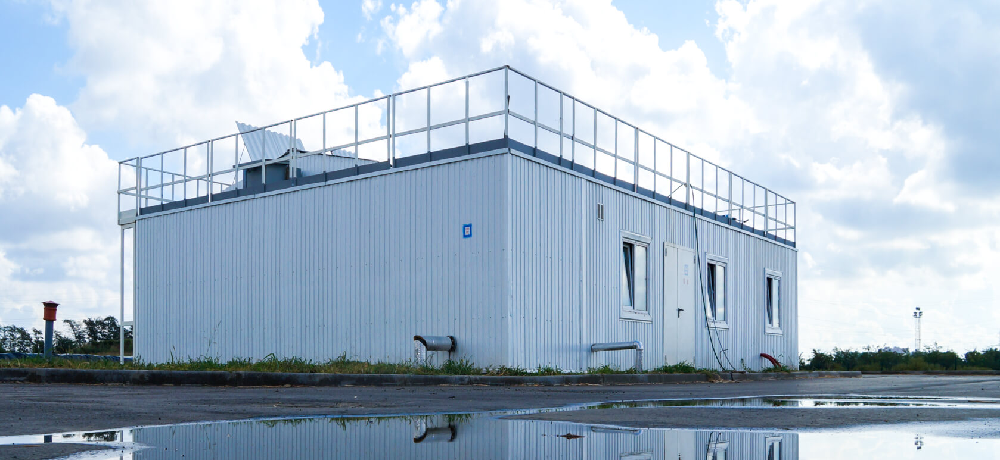

Проектирование — основа при строительстве очистных сооружений канализации
которая дает подробное технологическое и экономическое обоснование всего проекта
37
дней
Средний срок разработки проекта
18
инженеров
Среднее количество участников проекта
Технология очистки — ключевой раздел, влияющий на успех всего проекта
Наличие неточных расчетов в ТХ может повлечь за собой переделку всего проекта

{% include 'components/company-brands.html' %}
{% include 'components/company-sertificate.html' %}
{% include 'components/consult.html' %}
{% endblock %}